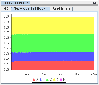

Next: Creating a new habitat Up: Using the MGX application Previous: Metadata Contents
After installation, the MGX application is already preconfigured to connect to the MGX server instance hosted at Justus Liebig University Giessen (JLU). In case a different MGX server should be used, the default server can be changed choosing Tools  Options from the menu and navigating to the MGX server tab (Fig. 2.2). While the site name can be freely chosen by the user, the server URL has to be entered as provided by the site administrators.
 |
 |
All communication between the MGX user interface and the MGX server is encrypted using
the standardized SSL (Secure Sockets Layer) protocol, ensuring confidentiality of
unpublished data and protecting the integrity of login credentials.
After successfully logging in, the Project Overview window
lists all available projects a user is allowed to access, including both public as well as
private projects. For each project, the role of the current user is given in brackets.
Projects are easily opened or closed by simply expanding the corresponding
nodes in the Project Explorer window (Fig. 2.4).
 |
|
|
Each project contains metagenome datasets as well as structured storage (Fig. 2.5), where user-provided databases can be uploaded to be used in custom analysis pipelines (Chapter 3).
Sebastian Jaenicke, 2024-02-18